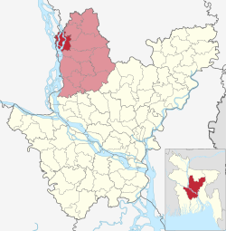

অবস্থান ও আয়তন
এই উপজেলার ভৌগোলিক অবস্থান ২৪.৪৫৮৩° উত্তর ৮৯.৮৬৬৭° পূর্ব। ভূঞাপুর টাঙ্গাইল জেলার উত্তর পশ্চিমাংশে অবস্থিত। উত্তরে গোপালপুর উপজেলা ও জামালপুর জেলার সরিষাবাড়ি উপজেলা, দক্ষিণে কালিহাতি উপজেলা, পূর্বে গোপালপুর উপজেলা, ঘাটাইল উপজেলা ও কালিহাতী উপজেলা, পশ্চিমে যমুনা নদী ও সিরাজগঞ্জ সদর উপজেলা। ভূঞাপুর উপজেলা প্রায় ২৪০২৩' থেকে ২৪০৩৫' উত্তর অক্ষাংশ এবং ৮৯০৪৩' থেকে ৮৯০৫৪' পূর্ব দ্রাঘিমাংশের মধ্যে অবস্থিত। ভূঞাপুর উপজেলার আয়তন ১৩৪.৪৬ বর্গকিলোমিটার।
প্রশাসনিক এলাকা
ভূঞাপুর পৌরসভা ও ৬টি ইউনিয়ন, যথা-গোবিন্দাসী ইউনিয়ন,ফলদা ইউনিয়ন,নিকরাইল ইউনিয়ন
উল্লেখযোগ্য ব্যক্তিত্ব
- ইবরাহীম খাঁ - শিক্ষাবিদ;
- খন্দকার আসাদুজ্জামান - রাজনীতিবিদ
- আফরান নিশো - অভিনেতা
- লোকমান হোসেন ফকির - একুশে পদক ও জাতীয় চলচ্চিত্র পুরস্কারপ্রাপ্ত বাংলাদেশী সঙ্গীতজ্ঞ।।
ভূঞাপুর উপজেলা
মানচিত্রে ভূঞাপুর উপজেলা
স্থানাঙ্কঃ
২৪°২৭′১৭″ উত্তর ৮৯°৫১′৫৩″
দেশঃ
বাংলাদেশ
বিভাগঃ
ঢাকা বিভাগ
জেলাঃ
টাঙ্গাইল জেলা
আয়তনঃ
মোটঃ
১৩৪.৪৬ বর্গকিমি
জনসংখ্যাঃ
মোটঃ
১,৯০,৯১০
জনঘনত্বঃ
১,৪০০/বর্গকিমি
সাক্ষরতার হারঃ:
৪৩%
সময় অঞ্চলঃ
বিএসটি (ইউটিসি+৬)
বিভাগের কোডঃ
৩০ ৯৩ ১৯